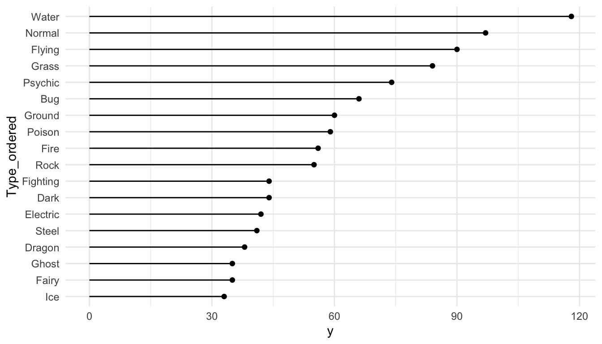
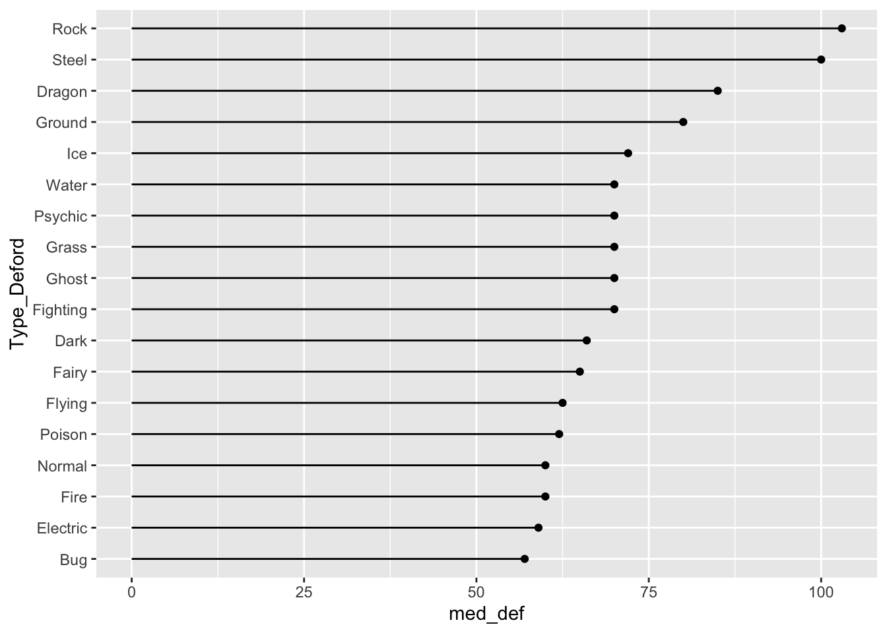
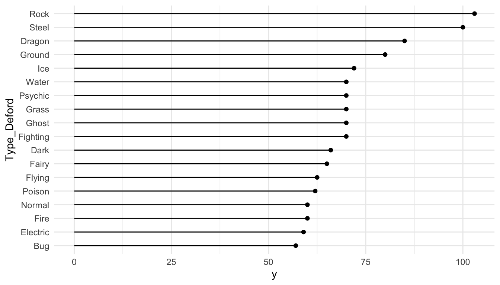
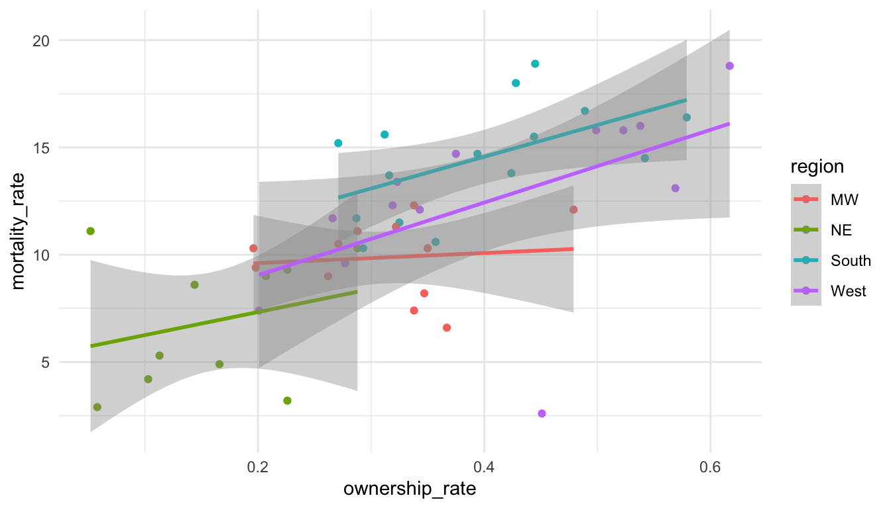

8 Factors with forcats
Goals:
- Use the
forcatspackage to change the levels of factors, or to re-order levels of factors in a way that makes tables and graphs easier to read.
8.1 Change Factor Levels
The Data: The pokemon_allgen.csv data set contains observations on Pokemon from the first 6 Generations (the first 6 games). There are 20 variable in this data set, but, of particular interest for this chapter are
-
Type 1, the first Type characteristic of the Pokemon (a factor with 13 levels) -
Type 2, the second Type characteristic of the Pokemon (a factor with 13 levels,NAif the Pokemon only has one type) -
Generation, the generation the Pokemon first appeared in (a factor with 6 levels)
Read in the data set with read_csv(). Then, use a mutate() statement to make a Generation_cat variable that is a factor.
One easy way to get a quick summary of a factor variable is to use group_by() and n() within a summarise() statement:
8.1.1 fct_recode() to Rename Levels
Now, let’s make a bar plot that examines how many Legendary Pokemon first appear in each generation, using dplyr commands that we’ve used and a simple geom_col() GEOM:
pokemon_legend <- pokemon_df |> filter(Legendary == TRUE) |>
group_by(Generation_cat) |>
summarise(nlegend = n())
ggplot(data = pokemon_legend, aes(x = Generation_cat, y = nlegend)) +
geom_col() +
theme_minimal()
We’ve discussed how to change many aspects of ggplot2 graphs, but we haven’t discussed how to rename the labels of levels of a categorical variable, whether those appear in the x-axis or in a separate legend. The easiest way to do this is to rename the levels in the factor itself using fct_recode(). Suppose, for example, that we want to relabel the Generation number with the actual region corresponding to each game (Kanto, Johto, Hoenn, Sinnoh, Unova, and Kalos). The function fct_recode() takes the name of a factor already present in the data set as its first argument and then a series of renaming schemes (new_name = “old_name”) as its remaining arguments.
pokemon_legend <- pokemon_legend |>
mutate(Generation_cat2 = fct_recode(Generation_cat,
Kanto = "1", Johto = "2",
Hoenn = "3", Sinnoh = "4",
Unova = "5", Kalos = "6")) |>
select(Generation_cat2, everything())
head(pokemon_legend)
#> # A tibble: 6 × 3
#> Generation_cat2 Generation_cat nlegend
#> <fct> <fct> <int>
#> 1 Kanto 1 6
#> 2 Johto 2 5
#> 3 Hoenn 3 34
#> 4 Sinnoh 4 17
#> 5 Unova 5 27
#> 6 Kalos 6 13
ggplot(data = pokemon_legend,
aes(x = Generation_cat2, y = nlegend)) +
geom_col() +
theme_minimal()
8.1.2 Collapsing Many Levels Into Fewer Levels with fct_collapse()
Sometimes, we might want to collapse the levels of two or more factors into a single level. With the Pokemon data set, there isn’t an example where this really makes sense, but, in the exercises, we’ll see a good use for this function with the social survey data set. For practice, we can collapse the Ice and Dark type Pokemon into a new level called Coolest and we can collapse the Poison, Fighting, and Fire type Pokemon into a new level called Least_Cool.
pokemon_long <- pokemon_df |> pivot_longer(c(`Type 1`, `Type 2`),
names_to = "Number",
values_to = "Type")
pokemon_long |>
mutate(new_type = fct_collapse(Type, Coolest = c("Ice", "Dark"),
Least_Cool = c("Fire", "Fighting", "Poison"))) |>
select(new_type, Type, everything())
#> # A tibble: 1,894 × 22
#> new_type Type `#` Name Total HP Attack Defense `Sp. Atk` `Sp. Def`
#> <fct> <chr> <dbl> <chr> <dbl> <dbl> <dbl> <dbl> <dbl> <dbl>
#> 1 Grass Grass 1 Bulb… 318 45 49 49 65 65
#> 2 Least_Cool Pois… 1 Bulb… 318 45 49 49 65 65
#> 3 Grass Grass 2 Ivys… 405 60 62 63 80 80
#> 4 Least_Cool Pois… 2 Ivys… 405 60 62 63 80 80
#> 5 Grass Grass 3 Venu… 525 80 82 83 100 100
#> 6 Least_Cool Pois… 3 Venu… 525 80 82 83 100 100
#> # ℹ 1,888 more rows
#> # ℹ 12 more variables: Speed <dbl>, Generation <dbl>, Legendary <lgl>,
#> # id <chr>, identifier <chr>, height <dbl>, weight <dbl>,
#> # base_experience <dbl>, order <dbl>, is_default <dbl>,
#> # Generation_cat <fct>, Number <chr>What happens to the levels that aren’t being re-specified?
Exercise 1. What dplyr function(s) could we also use to create the new levels that were created with fct_collapse()? Why might it be a little easier to use fct_collapse()?
Exercise 2. Use fct_recode() with mutate() to recode “A” to “Apple”, and “B” to “Banana” in the following toy data set:
8.2 Reorder Factor Levels
8.2.1 Change the Order of Levels by a Quantitative Variable with fct_reorder()
We might also be interested in re-ordering the x or y-axis of a particular graph so that the order of the factors correspond to, for example, the median of a quantitative variable for each level. The reason we would want to do this is easiest to see with an example. For example, suppose we want to look at the most common Pokemon types across the first 6 generations. We first get rid of duplicate Pokemon (we’ll discuss this in an exercise). Then, we pivot the data so that type is in one column, and we remove observations with missing Type, which correspond to the second Type of Pokemon that only have a single Type:
pokemon_nodup <- pokemon_df |> group_by(`#`) |> slice(1) |>
ungroup()
pokemon_long <- pokemon_nodup |>
pivot_longer(c(`Type 1`, `Type 2`),
names_to = "Number",
values_to = "Type")
pokemon_sum <- pokemon_long |>
group_by(Type) |>
summarise(count_type = n()) |>
filter(!is.na(Type))
ggplot(data = pokemon_sum, aes(x = Type,
y = count_type)) +
geom_col() +
coord_flip() + ## flips the x and y axes
theme_minimal()
How does R order the levels of the Type factor, by default? How might you like them to be ordered to make the graph more readable?
The following code creates a new factor variable called Type_ordered that orders type by the count_type variable. fct_reorder() takes a factor as its first argument and a numeric variable to re-order that factor by as its second argument. The bar plot is then reconstructed with this new variable.
pokemon_sum <- pokemon_sum |>
mutate(Type_ordered = fct_reorder(.f = Type, .x = count_type))
ggplot(data = pokemon_sum, aes(x = Type_ordered,
y = count_type)) +
geom_col() +
coord_flip() +
theme_minimal()
8.2.2 Lollipop Plots
Lollipop plots are a popular alternative to bar plots because they often look cleaner with less ink. To make a lollipop plot in R, we specify two different geoms: geom_segment() to form the stick of the lollipop and geom_point() to form the pop part of the lollipop. geom_segment() requires 4 aesthetics: x, xend, y, and yend.
ggplot(data = pokemon_sum, aes(x = Type_ordered,
y = count_type)) +
geom_segment(aes(x = Type_ordered, xend = Type_ordered,
y = 0, yend = count_type)) +
geom_point() +
coord_flip() +
theme_minimal()
fct_reorder() also works with boxplots or simple point plots that show, for example, the median response for each level of a factor. The following set of plots investigate how the Defense stat changes for different Pokemon types
pokemon_long <- pokemon_long |>
filter(!is.na(Type)) |>
mutate(Type_Deford = fct_reorder(.f = Type, .x = Defense,
.fun = median))
ggplot(data = pokemon_long, aes(x = Type_Deford,
y = Defense)) +
geom_boxplot() +
coord_flip() +
theme_minimal()
The following code makes a point plot that shows the median defense for each type instead of boxplots.
pokemon_med <- pokemon_long |> group_by(Type_Deford) |>
summarise(med_def = median(Defense)) |>
mutate(Type_Deford = fct_reorder(.f = Type_Deford, .x = med_def,
.fun = median))
ggplot(data = pokemon_med, aes(x = med_def, y = Type_Deford)) +
geom_point() +
theme_minimal()
Finally, we can make a lollipop plot of median defense.
ggplot(data = pokemon_med, aes(x = Type_Deford, y = med_def)) +
geom_segment(aes(xend = Type_Deford, y = 0, yend = med_def)) +
geom_point() +
coord_flip() +
theme_minimal()
The previous two plots (the point plot of median defense and the lollipop plot of median defense) are really not the best types of plots to explore defense across the different Pokemon types. We will discuss why as part of a class exercise.
New Data. The gun_violence_us.csv data set was obtained from https://www.openintro.org/book/statdata/index.php?data=gun_violence_us and contains the following variables on gun violence in 2014:
-
state, the name of the U.S. state -
mortality_rate, number of deaths from gun violence per 100,000 people -
ownership_rate, the proportion of adults who own a gun -
region, region of the U.S. (South,West,NE, andMW)
8.2.3 Reordering Levels Manually with fct_relevel()
Suppose that we want to investigate the relationship between mortality_rate and ownership_rate using this data set. Run the following code to create a scatterplot of mortality_rate vs. ownership_rate with fitted linear regression lines for each region of the United States:
ggplot(data = mortality_df,
aes(x = ownership_rate, y = mortality_rate, colour = region)) +
geom_point() +
geom_smooth(method = "lm") +
theme_minimal()
Notice the order of the levels in the legend. Most people would prefer the order to actually match up with where the lines in the plot end, not for the order to be alphabetical. To achieve this, we can reorder the levels manually with fct_relevel().
Factors are ordered alphabetically by default. If we want precise control over the order of the levels of a factor, we can use fct_relevel(), which takes a factor and a vector of the new levels as inputs:
mortality_df <- mortality_df |>
mutate(region_3 = fct_relevel(region, c("South", "West", "MW", "NE")))
ggplot(data = mortality_df,
aes(x = ownership_rate, y = mortality_rate, colour = region_3)) +
geom_point() +
geom_smooth(method = "lm") +
theme_minimal()Reordering the levels of a factor manually might also be useful in fitting linear models. Recall that, by default, R makes the reference group in a linear model the first level alphabetically. If we’d like a different reference group, you can reorder the levels of the factor:
If you have not taken STAT 213, you can ignore this discussion about the reference group in linear models.
Exercise 3. The .fun argument in fct_reorder() controls how the Type factor is ordered. In the boxplots of Pokemon defense, change this argument when making pokemon_long so that the boxplots are ordered by the maximum Defense instead of the median Defense.
ggplot(data = pokemon_long, aes(x = Type_Deford,
y = Defense)) +
geom_boxplot() +
coord_flip() +
theme_minimal()8.3 Practice
8.3.1 Class Exercises
Class Exercise 1. In the text, it is mentioned that the point plot of median defense and the lollipop plot of median defense are not great visualizations. Why? For what type of data would these visualizations be more appropriate?
Class Exercise 2. For the pokemon data set, we mentioned that we got rid of duplicates with group_by(#) |> slice(1) |> ungroup(). Explain why the code would get rid of duplicates. We will then discuss an alternative method to examine duplicates with the janitor package.
Class Exercise 3. Make the side-by-side boxplots again with the pokemon data but do not use ungroup() by running the following code.
pokemon_nodup <- pokemon_df |> group_by(`#`) |> slice(1) ## |>
## ungroup()
pokemon_long <- pokemon_nodup |>
pivot_longer(c(`Type 1`, `Type 2`),
names_to = "Number",
values_to = "Type")
pokemon_long <- pokemon_long |>
filter(!is.na(Type)) |>
mutate(Type_Deford = fct_reorder(.f = Type, .x = Defense,
.fun = median))
ggplot(data = pokemon_long, aes(x = Type_Deford,
y = Defense)) +
geom_boxplot() +
coord_flip()Why are the boxplots no longer ordered by median defense?
8.3.2 Your Turn
For these your turn exercises, we will use a data set on National Football League standings from 2000 to 2020. Read in the data set with:
library(tidyverse)
library(here)
standings_df <- read_csv(here("data/standings.csv"))
standings_df
#> # A tibble: 638 × 15
#> team team_name year wins loss points_for points_against
#> <chr> <chr> <dbl> <dbl> <dbl> <dbl> <dbl>
#> 1 Miami Dolphins 2000 11 5 323 226
#> 2 Indianapolis Colts 2000 10 6 429 326
#> 3 New York Jets 2000 9 7 321 321
#> 4 Buffalo Bills 2000 8 8 315 350
#> 5 New England Patriots 2000 5 11 276 338
#> 6 Tennessee Titans 2000 13 3 346 191
#> # ℹ 632 more rows
#> # ℹ 8 more variables: points_differential <dbl>, margin_of_victory <dbl>,
#> # strength_of_schedule <dbl>, simple_rating <dbl>,
#> # offensive_ranking <dbl>, defensive_ranking <dbl>, playoffs <chr>,
#> # sb_winner <chr>The important variables that we will use include:
-
team, the city where the team is based in -
team_name, the name of the team -
playoffs, whether or not the team made the playoffs that year -
sb_winner, whether or not the team won the superbowl that year
Your Turn 1. Use the table() function with table(name_of_data_frame$name_of_variable) to make a table of team_name. This is useful to use for categorical variables to give a quick summary of what the levels are and how many times each level appears in the data set.
Your Turn 2. Until a few years ago, the Washington Commanders team used to be known as the Washington Redskins. Because of the obvious racism the name conveys, in 2022, the name was changed from Redskins to Commanders. Use a forcats function to rename the Redskins team_name to Commanders. Note that, usually, we have been renaming the new variable after we use a forcats function, but, oftentimes, it makes sense to just overwrite the old variable by using the same name in our mutate() statement.
Your Turn 3. Use a function from tidyr to combine team and team_name into a single variable called franchise. You may want to specify sep = " " for consistency with the city names.
Your Turn 4. There are a couple of franchises in the national football league that moved cities in the late 2010s. In particular, the San Diego Chargers became the Los Angeles Chargers and the St. Louis Rams became the Los Angeles Rams (this is another instance where being familiar with context is helpful here: it may have taken you much longer to figure this out, had you not known much about the NFL). Use a forcats function to put the San Diego Chargers and Los Angeles Chargers into a single level, San Diego LA Chargers, and to put the St. Louis Rams and Los Angeles Rams into a single level, St. Louis LA Rams.
Your Turn 5. Using the updated data set, create a lollipop plot of the ten franchises who have made the playoffs most often. You will need to do some work with dplyr before making the plot.
Your Turn 6. Customize your lollipop plot by changing the way the points look at the end and / or the way the “stems” of the lollipops look. You may use https://r-graph-gallery.com/301-custom-lollipop-chart.html for inspiration.
The following are additional exercises for forcats: I’ve left them in here in case you want some extra practice! We will use the general social survey data set, which is in the forcats library in R. You should some of this Wikipedia page to better understand where this data comes from Wikipedia.
Most variables are self-explanatory, but a couple that aren’t are:
-
partyid, political leaning and -
denom, religious denomination (if unfamiliar with this, you can think of it as a “more specific” subset of a particular religion).
Note that some of these exercises are from the R for Data Science textbook.
Load in the data set with
Additional Exercise 1. Using a forcats function, change the name of the level Not str republican to be Weak republican and change the name of the level Not str democrat to be Weak democrat. These names more closely match the levels Strong republican and Strong democrat. Then, create a table of counts that shows the number of respondents in each political party partyid.
Note: Levels that aren’t specified in your forcats function do not change.
Note 2: In naming something Weak republican, you’ll need to use backticks since there is a space in the level name.
Additional Exercise 2. Use a forcats function so that partyid just has 4 categories: Other (corresponding to No answer, Don’t know, Other party), Ind (corresponding to Ind,near rep, Independent, Ind, near dem), Rep (corresponding to Strong republican and Not str republican), and Dem (corresponding to Not str democrat and Strong democrat).
Additional Exercise 3. Run the code to create the following plot that shows the average number of hours of television people watch from various religions.
Then, use a forcats function create a new variable in the data set that reorders the religion factor levels and make a lollipop plot so that the religion watches the most television, on average, is on the top, and the religion that watches the least television, on average, is on the bottom.
Additional Exercise 4. Run the code to make the following line plot that shows age on the x-axis, the proportion on the y-axis, and is coloured by various marital statuses (married, divorced, widowed, etc.):
Then, use a forcats function to make the plot so that the legend labels line up better with the different coloured marital status lines (e.g. so that the label for widowed is the first that appears in the legend, the label for married is second, etc.).
Additional Exercise 5. We haven’t talked much about creating two-way tables (or contingency tables). These are generally quite difficult to make with the tidyverse functions, but you can use the base R table() and prop.table() functions to make these.
Using data only from the year 2014, run the following code to make 4 two-way tables with the party_small variable that was constructed earlier and race:
gss_cat <- gss_cat |> mutate(party_small = fct_collapse(partyid,
Other = c("No answer", "Don't know", "Other party"),
Ind = c("Ind,near rep", "Independent", "Ind,near dem"),
Rep = c("Strong republican", "Not str republican"),
Dem = c("Not str democrat", "Strong democrat")))
gss_recent <- gss_cat |> filter(year == 2014)
tab1 <- table(gss_recent$party_small, gss_recent$race)
tab1
#>
#> Other Black White Not applicable
#> Other 8 12 68 0
#> Rep 22 17 498 0
#> Ind 152 108 828 0
#> Dem 80 249 496 0
prop.table(tab1)
#>
#> Other Black White Not applicable
#> Other 0.003152088 0.004728132 0.026792750 0.000000000
#> Rep 0.008668243 0.006698188 0.196217494 0.000000000
#> Ind 0.059889677 0.042553191 0.326241135 0.000000000
#> Dem 0.031520883 0.098108747 0.195429472 0.000000000
prop.table(tab1, margin = 1)
#>
#> Other Black White Not applicable
#> Other 0.09090909 0.13636364 0.77272727 0.00000000
#> Rep 0.04096834 0.03165736 0.92737430 0.00000000
#> Ind 0.13970588 0.09926471 0.76102941 0.00000000
#> Dem 0.09696970 0.30181818 0.60121212 0.00000000
prop.table(tab1, margin = 2)
#>
#> Other Black White Not applicable
#> Other 0.03053435 0.03108808 0.03597884
#> Rep 0.08396947 0.04404145 0.26349206
#> Ind 0.58015267 0.27979275 0.43809524
#> Dem 0.30534351 0.64507772 0.26243386Use the help on ?prop.table to figure out how each of these three tables are constructed.
Which table do you think is most informative? What conclusions does it help you to draw?